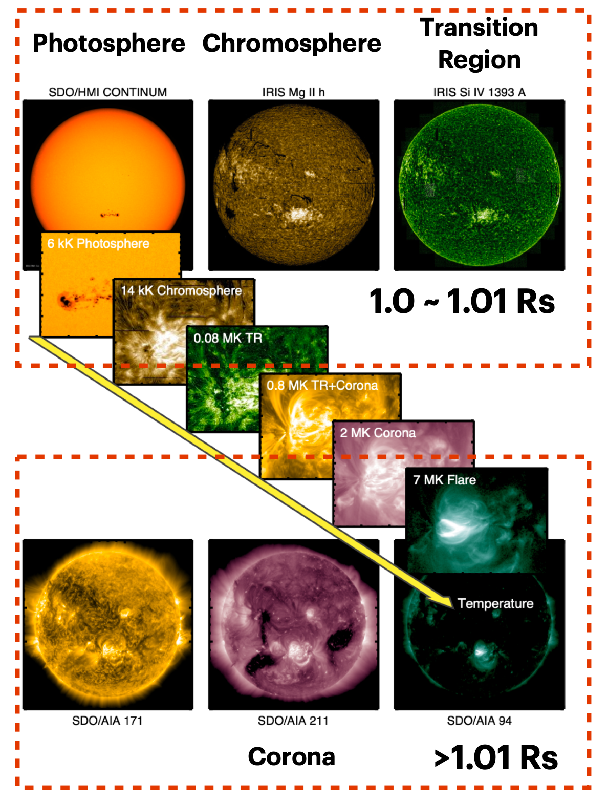
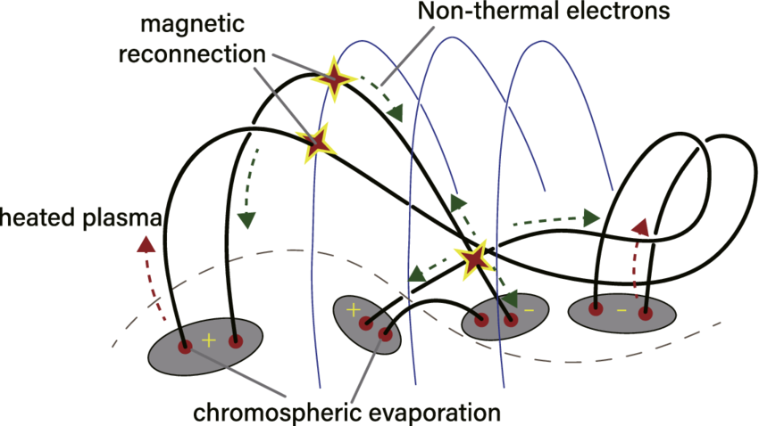
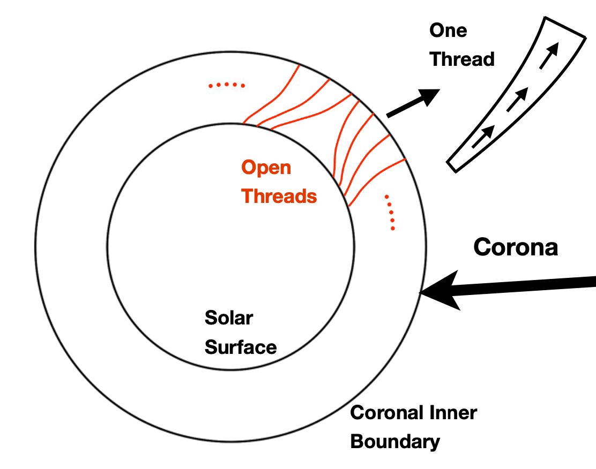
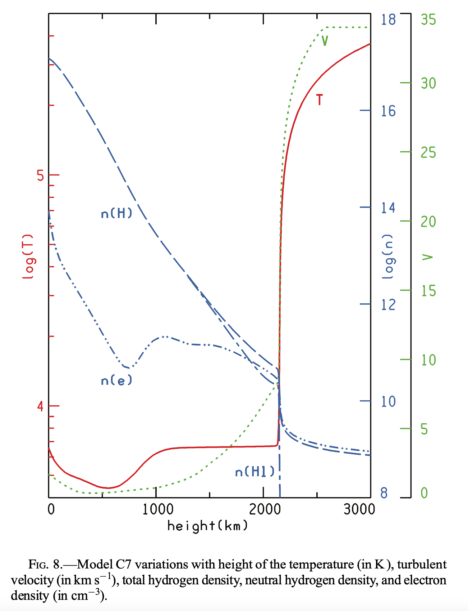
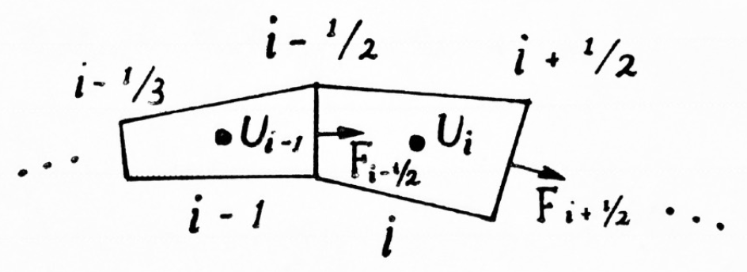
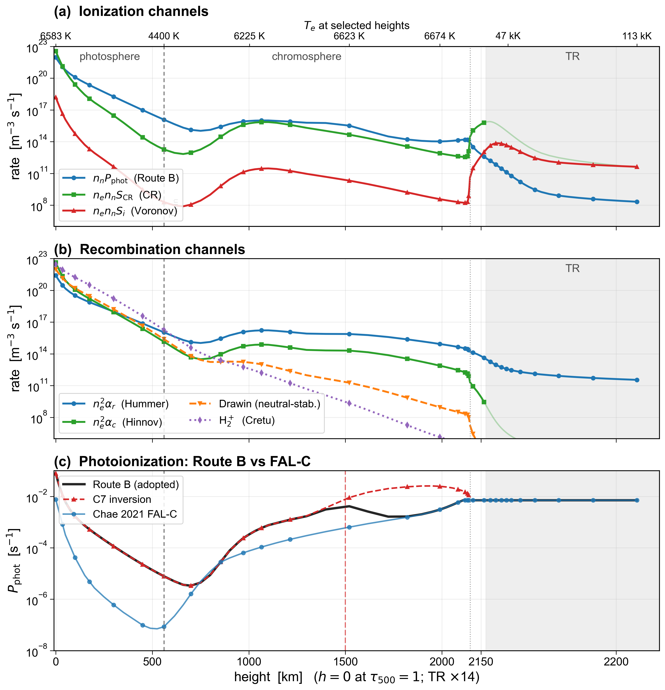
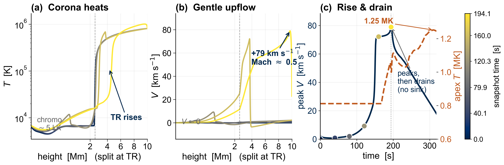
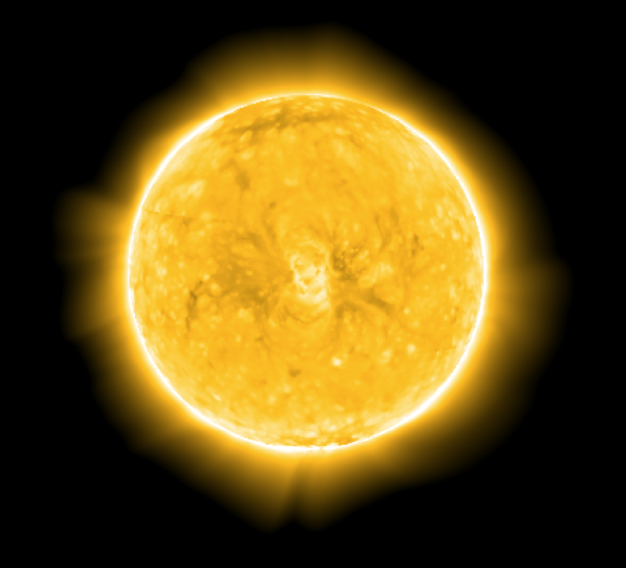
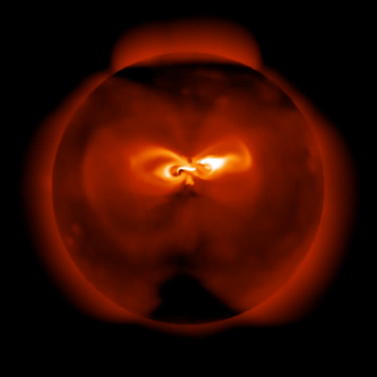

<!DOCTYPE html>
<html lang="en">
<head>
<meta charset="UTF-8">
<meta name="viewport" content="width=device-width, initial-scale=1.0">
<title>Toward a Dynamic Chromosphere for AWSoM-R — SHINE 2026 Poster</title>
<link rel="stylesheet" href="https://cdn.jsdelivr.net/npm/katex@0.16.9/dist/katex.min.css">
<script defer src="https://cdn.jsdelivr.net/npm/katex@0.16.9/dist/katex.min.js"></script>
<script defer src="https://cdn.jsdelivr.net/npm/katex@0.16.9/dist/contrib/auto-render.min.js"></script>
<link href="https://fonts.googleapis.com/css2?family=Nunito:wght@400;600;700;800;900&display=swap" rel="stylesheet">
<script crossorigin src="https://unpkg.com/react@18/umd/react.production.min.js"></script>
<script crossorigin src="https://unpkg.com/react-dom@18/umd/react-dom.production.min.js"></script>
<script crossorigin src="https://unpkg.com/@babel/standalone@7/babel.min.js"></script>
<style>
  /* ============================================================
     University of Michigan palette
     ============================================================ */
  :root {
    --blue: #00274C; --blue-light: #e7edf4;          /* UM navy */
    --blue2: #1f5da0;                                 /* mid navy accent */
    --maize: #FFCB05;                                 /* UM maize */
    --orange: #c05a1f; --orange-light: #fbeee3;
    --teal: #167b6b; --purple: #5b4a9c; --red: #aa1e1e;
    --text: #1a1a1a; --text-light: #555;
    --bg: #eceef1; --card-bg: #fff;
    --gap: 8mm; --pad: 13mm;
    --font-scale: 1.72;
  }

  /* ============================================================
     Poster dimensions: 3 ft x 4 ft portrait = 914.4mm x 1219.2mm
     ============================================================ */
  @page { size: 914.4mm 1219.2mm; margin: 0; }
  * { margin: 0; padding: 0; box-sizing: border-box; }
  html { font-family: 'Nunito', sans-serif; color: var(--text); -webkit-print-color-adjust: exact; print-color-adjust: exact; }
  body { width: 914.4mm; height: 1219.2mm; background: var(--bg); overflow: hidden; transform-origin: top left; }
  #root { width: 100%; height: 100%; display: grid; grid-template-rows: auto 1fr; }
  @media screen { html { background:#bbb; overflow:hidden; width:100vw; height:100vh; } body { position:absolute; box-shadow:0 4px 30px rgba(0,0,0,.3); border-radius:4px; } }
  @media print { html { background:none; } body { position:static; transform:none!important; box-shadow:none; border-radius:0; } .toolbar,.divider,.swap-handle,.drop-zone{display:none!important;} }
  body.preview .divider, body.preview .swap-handle, body.preview .drop-zone { display:none!important; }

  /* === HEADER === */
  .header { background: linear-gradient(135deg,#00274C,#13447a 55%,#1f5da0); padding:16mm var(--pad) 14mm; display:flex; align-items:center; gap:12mm; border-bottom:6px solid var(--maize); }
  .header-left { flex:1; }
  .header h1 { font-size:54pt; font-weight:900; line-height:1.05; color:#fff; margin-bottom:4mm; letter-spacing:-0.3pt; }
  .header h1 .m { color:var(--maize); }
  .header .sub { font-size:28pt; font-weight:800; color:rgba(255,255,255,.92); margin-bottom:7mm; }
  .header .authors { font-size:25pt; color:#fff; font-weight:700; }
  .header .authors .em { font-size:16pt; font-weight:600; color:var(--maize); }
  .header .aff { font-size:18pt; color:rgba(255,255,255,.8); margin-top:3mm; font-weight:600; }
  .header .aff .em { color:var(--maize); font-weight:700; }
  .header-logos { display:flex; align-items:center; justify-content:center; gap:9mm; flex-shrink:0; }
  .header-logos img { height:34mm; object-fit:contain; background:#fff; padding:3.5mm 4.5mm; border-radius:3mm; box-shadow:0 2px 6px rgba(0,0,0,.22); }
  .header-right { display:flex; flex-direction:column; align-items:center; gap:5mm; flex-shrink:0; }
  .badge { font-size:23pt; font-weight:900; color:#00274C; background:var(--maize); padding:3.5mm 9mm; border-radius:2.5mm; letter-spacing:0.5pt; }

  /* === POSTER COLUMNS === */
  .poster { display:flex; gap:var(--gap); padding:var(--gap) var(--pad); min-height:0; flex:1; overflow:hidden; }
  .col { display:flex; flex-direction:column; gap:var(--gap); min-height:0; overflow:hidden; }

  /* === CARD === */
  .card { background:var(--card-bg); border-radius:3mm; padding:6mm 6mm; box-shadow:0 1px 4px rgba(0,0,0,.1); border-top:5px solid var(--blue); display:flex; flex-direction:column; overflow:hidden; min-height:0; flex:0 0 auto; position:relative; transition: outline .15s; }
  .card.grow { flex:1 1 0; }
  .card.orange { border-top-color:var(--orange); }
  .card.teal   { border-top-color:var(--teal); }
  .card.purple { border-top-color:var(--purple); }
  .card.red    { border-top-color:var(--red); }

  .card h2 { font-size:calc(15pt * var(--font-scale)); font-weight:900; margin-bottom:2mm; flex-shrink:0; color:var(--blue); line-height:1.08; }
  .card.orange h2{color:var(--orange);} .card.teal h2{color:var(--teal);} .card.purple h2{color:var(--purple);} .card.red h2{color:var(--red);}
  .card p,.card li { font-size:calc(11pt * var(--font-scale)); line-height:1.3; }
  .card p { margin-bottom:1mm; }
  .card ul,.card ol { padding-left:6mm; flex-shrink:0; margin:0.5mm 0; }
  .card li { margin-bottom:1.3mm; }
  .card li::marker { font-weight:800; color:var(--blue2); }
  .mz { color:var(--blue); font-weight:800; }
  .rd { color:var(--red); font-weight:800; }

  /* Highlight box */
  .hl { background:var(--blue-light); border-left:4px solid var(--blue2); padding:3mm 4mm; border-radius:0 2mm 2mm 0; margin-bottom:2mm; flex-shrink:0; }
  .hl p { font-size:calc(11.5pt * var(--font-scale)); line-height:1.32; font-weight:700; margin:0; }

  /* Figure — natural aspect, fills card WIDTH (height:auto) so there is never
     internal letterbox whitespace; the card itself is content-sized. */
  .fig { display:flex; flex-direction:column; margin:2mm 0 0; }
  .fig-wrap { display:flex; align-items:flex-start; justify-content:center; gap:4mm; }
  .fig-wrap img { width:100%; height:auto; border-radius:1.5mm; display:block; }
  .fig .cap { font-size:calc(8.5pt * var(--font-scale)); color:var(--text-light); margin-top:1.2mm; line-height:1.22; }
  .fig .cap b { color:var(--text); }

  /* Tables */
  table { width:100%; border-collapse:collapse; font-size:calc(10pt * var(--font-scale)); margin:1.5mm 0; }
  thead th { background:var(--blue); color:#fff; padding:1.5mm 2.5mm; text-align:left; font-weight:700; }
  tbody td { padding:1.2mm 2.5mm; border-bottom:1px solid #eee; }
  tbody tr:nth-child(even) { background:#f8f9fb; }

  /* Math */
  .katex { font-size:calc(11pt * var(--font-scale))!important; }
  .eq { background:var(--orange-light); border:1px solid #e2b48f; border-radius:2mm; padding:2mm 3mm; margin:2mm 0; text-align:center; flex-shrink:0; }
  .eq .katex { font-size:calc(12.5pt * var(--font-scale))!important; }
  .ref { font-size:calc(8.5pt * var(--font-scale)); color:var(--text-light); line-height:1.35; }

  /* === TOOLBAR === */
  .toolbar { position:fixed; top:8px; right:8px; z-index:1000; display:flex; gap:6px; align-items:center; }
  .toolbar button { font-family:'Nunito'; font-size:11px; font-weight:700; padding:5px 12px; border-radius:6px; border:none; cursor:pointer; background:#eee; color:#555; }
  .toolbar button:hover { background:#ddd; }

  /* Swap handles */
  .card .swap-handle { position:absolute; top:1.5mm; right:1.5mm; width:8mm; height:8mm; background:var(--blue); color:#fff; border-radius:1.5mm; font-size:9pt; text-align:center; line-height:8mm; cursor:pointer; z-index:10; user-select:none; opacity:.4; transition: opacity .15s, background .15s, transform .15s; }
  .card .swap-handle:hover { opacity:.8; transform:scale(1.15); }
  .card.swap-selected { outline:3px solid var(--orange); outline-offset:-1px; }
  .card.swap-selected .swap-handle { background:var(--orange); opacity:1; transform:scale(1.2); }

  /* Dividers */
  .divider { position:relative; z-index:50; flex-shrink:0; }
  .divider::after { content:''; position:absolute; background:rgba(31,93,160,.12); border-radius:1.5mm; transition:background .15s; }
  .divider:hover::after, .divider.active::after { background:rgba(31,93,160,.5); }
  .col-resize { width:6mm; cursor:col-resize; margin:0 -3mm; }
  .col-resize::after { top:0; bottom:0; left:1.5mm; width:3mm; }
  .row-resize { height:6mm; cursor:row-resize; margin:-3mm 0; }
  .row-resize::after { left:0; right:0; top:1.5mm; height:3mm; }

  /* Drop zones */
  .drop-zone { height:0; position:relative; z-index:60; transition: height .15s; }
  .drop-zone.visible { height:5mm; }
  .drop-zone-inner { position:absolute; left:2mm; right:2mm; top:0; bottom:0; border-radius:1.5mm; background:rgba(232,148,58,.15); border:2px dashed var(--orange); transition: background .15s; cursor:pointer; }
  .drop-zone-inner:hover { background:rgba(232,148,58,.35); }
</style>
</head>
<body>
<div id="root"></div>

<script type="text/babel">
const { useState, useRef, useEffect, useCallback } = React;
const MM = 3.7795275591;
const POSTER_W_MM = 914.4;
const POSTER_H_MM = 1219.2;

/* ================================================================
   Card content — one entry per poster section
   ================================================================ */
const CARD_REGISTRY = {
  intro: {
    title: 'Why the chromosphere?',
    color: null,
    grow: false,
    body: (
      <>
        <div className="hl"><p>The chromosphere is the <span className="mz">partially-ionized gateway</span> that sets the mass &amp; energy fed to the corona and solar wind — yet global models <span className="rd">prescribe</span> it rather than solve it.</p></div>
        <ul>
          <li>6&nbsp;kK&nbsp;→&nbsp;&gt;1&nbsp;MK across a few thousand km; density drops by orders of magnitude.</li>
          <li>Processes nearly all of the plasma &amp; Poynting flux that fill the corona — via evaporation, spicules, wave heating.</li>
        </ul>
        <div className="fig"><div className="fig-wrap"></div>
        <div className="cap"><b>Layers of the solar atmosphere</b> in SDO/AIA &amp; IRIS passbands — 6&nbsp;kK photosphere → chromosphere → transition region → &gt;1&nbsp;MK corona.</div></div>
      </>
    ),
  },
  coupling: {
    title: "AWSoM-R's missing lower boundary",
    color: 'orange',
    grow: false,
    body: (
      <>
        <p><span className="mz">AWSoM / AWSoM-R</span> (van&nbsp;der&nbsp;Holst et al. 2014; Sokolov et al. 2021) places its inner boundary in the upper chromosphere and injects Alfvén-wave Poynting flux through a thin, quasi-static layer. The dynamic chromosphere below is replaced by crude BCs:</p>
        <ul>
          <li>temperature fixed at unrealistic <span className="rd">{'$T\\sim5\\times10^{4}$'}&nbsp;K</span>;</li>
          <li>electron density far below chromospheric, {'$n_e\\sim2\\times10^{17}$'}&nbsp;m⁻³;</li>
          <li>plasma speed <span className="rd">left unspecified</span>.</li>
        </ul>
        <div className="hl"><p><span className="mz">Chromospheric evaporation</span> — conduction-driven upflows — governs the real mass/energy exchange; it must be <span className="rd">solved, coupled to the corona</span>.</p></div>
        <div className="fig"><div className="fig-wrap"></div>
        <div className="cap"><b>Flare/CME reconnection</b> drives non-thermal electrons &amp; downward conduction into the footpoints; the heated chromosphere <i>evaporates</i>, feeding hot plasma upward.</div></div>
      </>
    ),
  },
  geom: {
    title: 'From 3D MHD to a 1.5D field-aligned model',
    color: 'teal',
    grow: false,
    body: (
      <>
        <ul>
          <li><span className="mz">Two assumptions:</span> the flow is field-aligned, {'$\\mathbf{V}\\parallel\\mathbf{B}$'}, and the field is static, {'$\\partial\\mathbf{B}/\\partial t=0$'} — so a fixed (PFSS) potential field serves as a <span className="mz">geometric guide</span>.</li>
          <li>Split into flux tubes of cross-section {'$A(s)\\propto 1/B(s)$'}; derivatives reduce to {'$\\partial/\\partial s$'}.</li>
          <li>The <span className="rd">{'$B$'} field enters purely as an area factor</span>.</li>
          <li>13-variable 3D MHD → <span className="mz">6 field-aligned variables</span> (7 with a separate {'$T_e$'}).</li>
        </ul>
        <div className="fig"><div className="fig-wrap"></div>
        <div className="cap"><b>Open/closed field threads</b> → independent flux tubes; the problem becomes gas flow along one tube.</div></div>
      </>
    ),
  },
  twofluid: {
    title: 'Two-fluid field-aligned equations',
    color: 'purple',
    grow: false,
    body: (
      <>
        <p>Conservative form (ions {'$i$'} + neutrals {'$n$'}; electrons folded in by quasi-neutrality):</p>
        <div className="eq">{'$$\\dfrac{\\partial \\mathbf{U}}{\\partial t} + B\\,\\dfrac{\\partial}{\\partial s}\\!\\left(\\dfrac{\\mathbf{F}}{B}\\right) = \\mathbf{S}$$'}</div>
        <div className="eq">{'$$\\mathbf{U}=\\begin{bmatrix}\\rho_i\\\\\\rho_n\\\\\\rho_iV\\\\\\rho_nU\\\\e_i\\\\e_n\\end{bmatrix}\\!,\\;\\mathbf{F}=\\begin{bmatrix}\\rho_iV\\\\\\rho_nU\\\\\\rho_iV^2+2n_ik_BT_i\\\\\\rho_nU^2+n_nk_BT_n\\\\(e_i+2n_ik_BT_i)V\\\\(e_n+n_nk_BT_n)U\\end{bmatrix}\\!,\\;\\mathbf{S}=\\begin{bmatrix}+\\Gamma\\\\-\\Gamma\\\\-\\rho_i g+a_i+R\\\\-\\rho_n g+a_n-R\\\\-\\rho_i gV+Q_i\\\\-\\rho_n gU+Q_n\\end{bmatrix}$$'}</div>
        <p>Electron pressure {'$p_e=n_ik_BT_e$'} enters {'$e_i$'} via the factor 2. The <b>source {'$\\mathbf{S}$'}</b> couples the fluids and the corona:</p>
        <ul>
          <li>{'$\\Gamma$'} — net <b>ionization</b> mass exchange (neutral→ion; Voronov, Hummer rates);</li>
          <li>{'$a_s=p_sB\\,\\partial_s(1/B)$'} — flux-tube <b>area</b> force; {'$g$'} field-aligned gravity;</li>
          <li>{'$R=\\rho_i\\nu_{in}(U-V)+\\Gamma U$'} — ion–neutral <b>drag</b> + ionization momentum;</li>
          <li>{'$Q_{i},Q_{n}$'} — frictional + {'$T_i$'}–{'$T_n$'} collisional <b>exchange</b>, conduction {'$-\\partial_s q$'}, ionization cost, radiative <b>cooling</b>.</li>
        </ul>
      </>
    ),
  },
  source: {
    title: 'Source physics (calibrated to Model C7)',
    color: null,
    grow: false,
    body: (
      <>
        <p><span className="mz">Non-equilibrium H ionization / recombination</span> — five channels integrated dynamically:</p>
        <ul>
          <li>collisional {'$S_i$'} (Voronov 1997);</li>
          <li>multilevel collisional {'$S_{\\mathrm{CR}}$'} (detailed balance);</li>
          <li>radiative recomb. (Hummer 1994) {'$\\alpha_r\\propto T_e^{-0.75}$'};</li>
          <li>three-body {'$\\alpha_c\\propto n_e(k_BT_e)^{-9/2}$'} (Hinnov 1962);</li>
          <li>photoionization: <span className="mz">Route-B</span> C7 inversion ({'$h\\lesssim1500$'}&nbsp;km) blended to Chae (2021) FAL-C.</li>
        </ul>
        <p><b>Radiative cooling:</b> opt-thick H&thinsp;I/Ca&thinsp;II/Mg&thinsp;II (Carlsson &amp; Leenaarts 2012) + opt-thin {'$n_en_H\\Lambda(T)$'}. <b>Conduction:</b> Spitzer {'$\\kappa_e\\propto T_e^{5/2}$'} + {'$\\kappa_n$'}; <span className="mz">TRAC</span> (Johnston 2020). <b>Optional 3-T:</b> separate {'$T_e\\ne T_i$'}.</p>
        <div className="fig"><div className="fig-wrap"></div>
        <div className="cap"><b>Model C7 atmosphere</b> (Avrett &amp; Loeser 2008) — the initial state.</div></div>
      </>
    ),
  },
  bc: {
    title: 'Physically grounded boundary conditions',
    color: 'orange',
    grow: false,
    body: (
      <>
        <p><b>Well-balanced reconstruction</b> — the fix for the spurious downflow:</p>
        <ul>
          <li>The scheme used the <span className="rd">wrong gravitational potential</span> for neighbour pressures ⇒ the pressure gradient gave only <b>a third</b> of its support.</li>
          <li>This is a spurious downward force <i>everywhere</i>, at <span className="rd">every resolution</span>.</li>
          <li>Correcting it makes {'$V{=}0$'} an <span className="mz">exact discrete fixed point</span>; the residual ~km/s flow is the genuine energy-budget downflow.</li>
        </ul>
        <p><b>Lower BC</b> — photosphere:</p>
        <ul>
          <li><span className="mz">Discrete-hydrostatic ghost</span> enforces {'$dp/ds=-\\rho g$'} on the actual grid.</li>
          <li>Base density &amp; temperature pinned to Model&nbsp;C7; {'$V{=}0$'} (Pandey 2024).</li>
        </ul>
        <p><b>Upper BC</b> — corona top ({'$h\\approx10$'}&nbsp;Mm), now <span className="mz">resolved</span> so the boundary just lets it breathe:</p>
        <ul>
          <li>Hydrostatic ghost pressure ⇒ keeps {'$V{=}0$'} a fixed point.</li>
          <li><span className="mz">Continuous temperature</span> — no imposed hot wall (it would over-conduct via {'$\\kappa_e\\propto T^{5/2}$'} and blow up).</li>
          <li>EOS-consistent density; gentle outflow.</li>
          <li>Evaporation is driven by the <span className="rd">corona's own conductive flux down the TR</span>, not an imposed one.</li>
        </ul>
        <p><b>TRAC</b> (Johnston 2020) broadens the under-resolved TR so conduction stays accurate on the coarse grid.</p>
      </>
    ),
  },
  numerics: {
    title: 'Numerical methods',
    color: 'teal',
    grow: false,
    body: (
      <>
        <p>Finite-volume on the field line; {'$B$'} as a geometric factor:</p>
        <div className="eq">{'$$\\frac{\\partial \\mathbf{U}_i}{\\partial t}=-\\frac{B_i}{\\Delta s_i}\\!\\left(\\frac{\\mathbf{F}_{i+\\frac12}}{B_{i+\\frac12}}-\\frac{\\mathbf{F}_{i-\\frac12}}{B_{i-\\frac12}}\\right)+\\mathbf{S}_i$$'}</div>
        <ul>
          <li><span className="mz">Space:</span> TVD–MUSCL limited-linear reconstruction → 2nd order.</li>
          <li><span className="mz">Flux:</span> Rusanov (local Lax–Friedrichs).</li>
          <li><span className="mz">Time:</span> 2-stage Runge–Kutta → 2nd order.</li>
          <li><span className="mz">Stiff sources</span> operator-split, each advanced by the full {'$\\Delta t$'}: transport ⇒ drag ⇒ {'$T_i$'}–{'$T_n$'} equilibration ⇒ conduction (Thomas) ⇒ ionization (cell quadratic) ⇒ cooling (backward-Euler, positivity-preserving).</li>
        </ul>
        <div className="fig"><div className="fig-wrap"></div>
        <div className="cap"><b>Finite-volume stencil:</b> cell-averaged states {'$\\mathbf{U}_i$'} updated by interface fluxes {'$\\mathbf{F}_{i\\pm1/2}$'} along the field line.</div></div>
      </>
    ),
  },
  result1: {
    title: 'Result 1 — Ionization & recombination in C7',
    color: 'red',
    grow: false,
    body: (
      <div className="fig"><div className="fig-wrap"></div>
      <div className="cap"><b>Dense base:</b> the collisional pair ({'$S_{\\mathrm{CR}},\\alpha_c\\propto n_e$'}) dominates (Saha-like). <b>Mid/upper chromosphere:</b> photoionization + radiative recombination. <b>TR:</b> direct collisional {'$S_i$'}. Route-B closure matches FAL-C above 1500&nbsp;km; column cooling ≈&thinsp;6.6&thinsp;kW&thinsp;m⁻² (~10% of the CL2012 Bifrost benchmark).</div></div>
    ),
  },
  result2: {
    title: 'Result 2 — Gentle (conduction-driven) evaporation',
    color: 'purple',
    grow: false,
    body: (
      <>
        <p>A <span className="mz">first-principles testbed</span>: the C7 atmosphere extended into a <b>resolved ~1&nbsp;MK corona</b> ({'$h=0\\to10$'}&nbsp;Mm) with realistic frozen ionization (neutral chromosphere → ionized corona) + TRAC. Conduction runs from a hydrostatic {'$V{=}0$'} start — <span className="rd">no beam, no ad-hoc heating</span> — and its redistribution <i>alone</i> drives the flow.</p>
        <div className="fig"><div className="fig-wrap"></div>
        <div className="cap"><b>Six time frames</b> (colour&nbsp;=&nbsp;time). <b>(a)</b> the corona heats and the TR rises; <b>(b)</b> a gentle upflow (V&nbsp;≈&nbsp;0&nbsp;→&nbsp;+79&nbsp;km/s, Mach&nbsp;≈&nbsp;0.5) develops in the corona; <b>(c)</b> the upflow builds to {'$t\\approx194$'}&nbsp;s while the apex reaches 1.25&nbsp;MK — with no radiative sink the corona then drains.</div></div>
        <table>
          <thead><tr><th>Quantity</th><th>Initial</th><th>Evaporating</th></tr></thead>
          <tbody>
            <tr><td>Corona apex {'$T$'}</td><td>0.81&nbsp;MK</td><td><b>1.25&nbsp;MK</b></td></tr>
            <tr><td>Peak upflow {'$V$'}</td><td>0</td><td><b>+79&nbsp;km/s</b></td></tr>
            <tr><td>Upflow Mach</td><td>—</td><td><b>≈&thinsp;0.5 (subsonic)</b></td></tr>
            <tr><td>Coronal density</td><td>1×</td><td><b>~2×</b></td></tr>
          </tbody>
        </table>
        <p>Subsonic upflow ⇒ <i>gentle</i> evaporation (Antiochos &amp; Sturrock 1978), recovered from <span className="mz">conduction alone</span>; a radiative sink is the next step to sustain a quasi-steady corona.</p>
      </>
    ),
  },
  concl: {
    title: 'Conclusions & outlook',
    color: null,
    grow: false,
    body: (
      <>
        <div className="hl"><p>A self-consistent, dynamic chromosphere that <span className="mz">solves</span> the lower boundary AWSoM-R currently prescribes.</p></div>
        <ul>
          <li>A field-aligned <span className="mz">two-fluid</span> model: non-equilibrium H ionization, multi-channel radiative cooling, optional separate {'$T_e$'}, physical coronal BC — run along <span className="mz">PFSS field lines</span>.</li>
          <li>Recovers chromospheric ionization structure <i>and</i> the gentle conduction-driven evaporation signature (EM rise, subsonic upflow, TR burndown).</li>
          <li>Designed as a <span className="rd">drop-in dynamic lower boundary for AWSoM-R</span>.</li>
          <li><b>Next:</b> two-way coupling into SWMF; PFSS-line ensembles for full events.</li>
        </ul>
        <div className="fig"><div className="fig-wrap"></div>
        <div className="cap"><b>Downstream science enabled:</b> synthetic AIA&nbsp;171&nbsp;Å of a global coronal model (left) and a synthetic X-ray CME (right).</div></div>
      </>
    ),
  },
  refs: {
    title: 'Acknowledgements & key references',
    color: null,
    grow: false,
    body: (
      <>
        <p className="ref">Supported by the NASA Space Weather Center of Excellence <span className="mz">CLEAR</span> (80NSSC23M0191) and the SWMF effort at the University of Michigan.</p>
        <p className="ref">Avrett &amp; Loeser 2008, ApJS 175, 229 · Antiochos &amp; Sturrock 1978, ApJ 220, 1137 · Rosner, Tucker &amp; Vaiana 1978, ApJ 220, 643 · Voronov 1997, ADNDT 65, 1 · Hummer 1994, MNRAS 268, 109 · Carlsson &amp; Leenaarts 2012, A&amp;A 539, A39 · Johnston et al. 2020, A&amp;A 635, A168 · van der Holst et al. 2014, ApJ 782, 81 · Sokolov et al. 2021, ApJ 908, 172.</p>
      </>
    ),
  },
};

/* ================================================================
   Default layout — 3 columns (portrait), aspect-ratio aware
   col1: tall intro fig grows; col2: tall C7 profile grows; col3: tall rates fig grows
   ================================================================ */
const DEFAULT_LAYOUT = {
  columns: [
    { id: 'col1', widthMm: 276, cards: ['intro', 'coupling', 'geom'] },
    { id: 'col2', widthMm: 285, cards: ['twofluid', 'source', 'bc', 'numerics'] },
    { id: 'col3', widthMm: 311, cards: ['result1', 'result2', 'concl', 'refs'] },
  ],
};
/* Explicit heights ONLY on non-grow figure cards (sized to image aspect at ~291mm col).
   Text-only cards (twofluid, bc, numerics, refs) are left natural so they never leave
   empty space. The tall portrait figures (intro, source, result1) grow to fill columns. */
const DEFAULT_CARD_HEIGHTS = {};
const DEFAULT_FONT_SCALE = 1.72;

/* Logos — files in poster/logos/ (auto-inverted to white for the header) */
const DEFAULT_LOGOS = [
  { src: 'logos/umich.png', alt: 'University of Michigan', heightMm: 30 },
  { src: 'logos/swmf.png', alt: 'SWMF', heightMm: 24 },
  { src: 'logos/clear.png', alt: 'CLEAR', heightMm: 30 },
];

/* ================================================================
   FRAMEWORK CODE — generally don't need to modify below this line
   ================================================================ */

function cloneLayout(layout) {
  return { columns: layout.columns.map(c => ({ id: c.id, widthMm: c.widthMm, cards: [...c.cards] })) };
}

const LS_KEY = 'posterConfig';
function getFullConfig(layout, cardHeights, fontScale, logos) {
  return { columns: layout.columns, cardHeights, fontScale, logos };
}
function loadInitialConfig() {
  try { const s = localStorage.getItem(LS_KEY); if (s) return JSON.parse(s); } catch(e) {}
  return null;
}
const INIT_CONFIG = loadInitialConfig();

function PosterApp() {
  const [layout, setLayout] = useState(INIT_CONFIG ? cloneLayout({columns: INIT_CONFIG.columns}) : cloneLayout(DEFAULT_LAYOUT));
  const [selectedCard, setSelectedCard] = useState(null);
  const [cardHeights, setCardHeights] = useState(INIT_CONFIG?.cardHeights || {...DEFAULT_CARD_HEIGHTS});
  const [preview, setPreview] = useState(false);
  const [logos, setLogos] = useState(INIT_CONFIG?.logos || DEFAULT_LOGOS);
  const [fontScale, setFontScaleState] = useState(INIT_CONFIG?.fontScale || DEFAULT_FONT_SCALE);
  const currentScaleRef = useRef(1);
  const posterRef = useRef(null);

  useEffect(() => { const cfg = getFullConfig(layout, cardHeights, fontScale, logos); localStorage.setItem(LS_KEY, JSON.stringify(cfg)); }, [layout, cardHeights, fontScale, logos]);
  useEffect(() => { document.documentElement.style.setProperty('--font-scale', fontScale); }, [fontScale]);
  useEffect(() => { document.body.classList.toggle('preview', preview); }, [preview]);

  const fit = useCallback(() => {
    if (window.matchMedia('print').matches) return;
    const pW = POSTER_W_MM * MM, pH = POSTER_H_MM * MM;
    const scale = Math.min(window.innerWidth / pW, window.innerHeight / pH);
    currentScaleRef.current = scale;
    const left = (window.innerWidth - pW * scale) / 2;
    const top = (window.innerHeight - pH * scale) / 2;
    document.body.style.transform = 'translate(' + left + 'px,' + top + 'px) scale(' + scale + ')';
  }, []);
  useEffect(() => { fit(); window.addEventListener('resize', fit); return () => window.removeEventListener('resize', fit); }, [fit]);

  useEffect(() => { if (typeof renderMathInElement === 'function') renderMathInElement(document.body, {delimiters: [{left:'$$',right:'$$',display:true},{left:'$',right:'$',display:false}]}); });

  useEffect(() => {
    function handler(e) { if (selectedCard && !e.target.closest('.swap-handle') && !e.target.closest('.drop-zone')) setSelectedCard(null); }
    document.addEventListener('click', handler); return () => document.removeEventListener('click', handler);
  }, [selectedCard]);

  function swapCards(id1, id2) {
    if (id1 === id2) return false;
    setLayout(prev => { const next = cloneLayout(prev); let l1, l2; for (const c of next.columns) { const i1 = c.cards.indexOf(id1); if (i1!==-1) l1={col:c,idx:i1}; const i2 = c.cards.indexOf(id2); if (i2!==-1) l2={col:c,idx:i2}; } if (!l1||!l2) return prev; l1.col.cards[l1.idx]=id2; l2.col.cards[l2.idx]=id1; return next; });
    setCardHeights(prev => { const n={...prev}; delete n[id1]; delete n[id2]; return n; });
    return true;
  }
  function moveCard(cardId, targetColId, position) {
    setLayout(prev => { const next = cloneLayout(prev); for (const c of next.columns) { const i = c.cards.indexOf(cardId); if (i!==-1) { c.cards.splice(i,1); break; } } const tc = next.columns.find(c=>c.id===targetColId); if (!tc) return prev; tc.cards.splice(Math.max(0,Math.min(position,tc.cards.length)),0,cardId); return next; });
    setCardHeights(prev => { const n={...prev}; delete n[cardId]; return n; });
  }
  function setColumnWidth(colId, widthMm) { setLayout(prev => { const next = cloneLayout(prev); const c = next.columns.find(c=>c.id===colId); if (!c) return prev; c.widthMm = widthMm; return next; }); }
  function setCardHeight(cardId, heightMm) { setCardHeights(prev => ({...prev, [cardId]: heightMm})); }
  function getWaste() { let total=0; const details=[]; document.querySelectorAll('.fig-wrap').forEach(fw => { const img=fw.querySelector('img'); if(!img)return; const fr=fw.getBoundingClientRect(),ir=img.getBoundingClientRect(); const wH=Math.abs(fr.height-ir.height),wW=Math.abs(fr.width-ir.width); total+=wH+wW; details.push({card:fw.closest('.card')?.dataset.id,wasteH:Math.round(wH),wasteW:Math.round(wW),pct:Math.round((wH+wW)/(fr.height+fr.width)*100)}); }); return {total:Math.round(total),details}; }
  function getLayout() { const s=currentScaleRef.current; const r=[]; document.querySelectorAll('#poster > .col').forEach(col => { const cards=[]; col.querySelectorAll('.card').forEach(c => { const b=c.getBoundingClientRect(); cards.push({id:c.dataset.id,height:Math.round(b.height/s),heightMm:Math.round(b.height/s/MM),grow:c.classList.contains('grow')}); }); r.push({colId:col.id,widthPx:Math.round(col.getBoundingClientRect().width/s),widthMm:Math.round(col.getBoundingClientRect().width/s/MM),cards}); }); return r; }

  function resetLayout() { setLayout(cloneLayout(DEFAULT_LAYOUT)); setCardHeights({...DEFAULT_CARD_HEIGHTS}); setFontScaleState(DEFAULT_FONT_SCALE); setLogos([...DEFAULT_LOGOS]); setSelectedCard(null); localStorage.removeItem(LS_KEY); }
  function saveConfig() { const cfg=getFullConfig(layout,cardHeights,fontScale,logos); const b=new Blob([JSON.stringify(cfg,null,2)+'\n'],{type:'application/json'}); const u=URL.createObjectURL(b); const a=document.createElement('a'); a.href=u; a.download='poster-config.json'; a.click(); URL.revokeObjectURL(u); }
  function copyConfig() { navigator.clipboard.writeText(JSON.stringify(getFullConfig(layout,cardHeights,fontScale,logos),null,2)).then(()=>alert('Config copied! Paste it to Claude.')); }
  function setFontScale(s) { setFontScaleState(parseFloat(s)||1.25); }

  useEffect(() => { window.posterAPI = { swapCards, moveCard, setColumnWidth, setCardHeight, setFontScale, getWaste, getLayout, getConfig:()=>getFullConfig(layout,cardHeights,fontScale,logos), resetLayout, saveConfig, copyConfig }; });

  function handleSwapClick(cardId, e) { e.stopPropagation(); if (!selectedCard) setSelectedCard(cardId); else if (selectedCard===cardId) setSelectedCard(null); else { swapCards(selectedCard, cardId); setSelectedCard(null); } }
  function handleDropZone(targetColId, position, e) { e.stopPropagation(); if (!selectedCard) return; moveCard(selectedCard, targetColId, position); setSelectedCard(null); }

  function handleColResize(dividerIdx, e) {
    e.preventDefault(); const handle=e.currentTarget; handle.classList.add('active');
    const targetColIdx=dividerIdx===0?0:2; const invert=dividerIdx===0?1:-1;
    const targetEl=document.getElementById(layout.columns[targetColIdx].id);
    const startX=e.clientX; const scale=currentScaleRef.current;
    const startW=targetEl.getBoundingClientRect().width/scale;
    function onMove(ev) { const dx=(ev.clientX-startX)/scale*invert; const newW=Math.max(120,(startW+dx)/MM); setLayout(prev => { const next=cloneLayout(prev); next.columns[targetColIdx].widthMm=Math.round(newW); return next; }); }
    function onUp() { document.removeEventListener('mousemove',onMove); document.removeEventListener('mouseup',onUp); handle.classList.remove('active'); document.body.style.cursor=''; }
    document.body.style.cursor='col-resize'; document.addEventListener('mousemove',onMove); document.addEventListener('mouseup',onUp);
  }

  function handleRowResize(colId, cardAboveIdx, e) {
    e.preventDefault(); const handle=e.currentTarget; handle.classList.add('active');
    const col=layout.columns.find(c=>c.id===colId); const aboveId=col.cards[cardAboveIdx];
    const aboveEl=document.querySelector('[data-id="'+aboveId+'"]'); if(!aboveEl)return;
    const startY=e.clientY; const scale=currentScaleRef.current; const startH=aboveEl.getBoundingClientRect().height/scale;
    setCardHeights(prev=>({...prev,[aboveId]:startH/MM}));
    function onMove(ev) { const dy=(ev.clientY-startY)/scale; setCardHeights(prev=>({...prev,[aboveId]:Math.max(20,(startH+dy)/MM)})); }
    function onUp() { document.removeEventListener('mousemove',onMove); document.removeEventListener('mouseup',onUp); handle.classList.remove('active'); document.body.style.cursor=''; }
    document.body.style.cursor='row-resize'; document.addEventListener('mousemove',onMove); document.addEventListener('mouseup',onUp);
  }

  function isCardGrow(cardId) {
    if (cardHeights[cardId] != null) return false;
    for (const col of layout.columns) {
      const idx = col.cards.indexOf(cardId); if (idx===-1) continue;
      const hasGrower = col.cards.some(cid => CARD_REGISTRY[cid]?.grow && cardHeights[cid]==null);
      if (hasGrower) return CARD_REGISTRY[cardId]?.grow || false;
      return false;  /* no forced grow: cards stay content-sized (no hidden whitespace) */
    }
    return false;
  }

  function renderCard(cardId) {
    const card = CARD_REGISTRY[cardId]; if (!card) return null;
    const classes = ['card']; if (card.color) classes.push(card.color); if (isCardGrow(cardId)) classes.push('grow'); if (selectedCard===cardId) classes.push('swap-selected');
    const style = {}; if (cardHeights[cardId]!=null) style.flex='0 0 '+cardHeights[cardId]+'mm';
    return (<div key={cardId} className={classes.join(' ')} data-id={cardId} style={style}><div className="swap-handle" onClick={(e)=>handleSwapClick(cardId,e)}>&#x2725;</div><h2>{card.title}</h2>{card.body}</div>);
  }

  function renderDropZone(colId, position) {
    const visible = selectedCard !== null;
    return (<div key={'dz-'+colId+'-'+position} className={'drop-zone'+(visible?' visible':'')} onClick={(e)=>handleDropZone(colId,position,e)}>{visible && <div className="drop-zone-inner" />}</div>);
  }

  function renderColumn(col) {
    const style = col.widthMm != null ? {flex:'0 0 '+col.widthMm+'mm'} : {flex:'1'};
    const children = [renderDropZone(col.id, 0)];
    col.cards.forEach((cardId, i) => {
      children.push(renderCard(cardId));
      if (i < col.cards.length - 1) children.push(<div key={'row-'+col.id+'-'+i} className="divider row-resize" onMouseDown={(e)=>handleRowResize(col.id,i,e)} />);
      children.push(renderDropZone(col.id, i + 1));
    });
    return (<div key={col.id} className="col" id={col.id} style={style}>{children}</div>);
  }

  return (
    <>
      <div className="toolbar">
        <button onClick={()=>setPreview(!preview)} style={preview?{background:'#2d7fc1',color:'#fff'}:{}}>{preview?'Edit':'Preview'}</button>
        {!preview && <>
          <button onClick={()=>setFontScale(Math.max(0.8,fontScale-0.05))}>A-</button>
          <button onClick={()=>setFontScale(fontScale+0.05)}>A+</button>
          <button onClick={saveConfig} title="Download poster-config.json">Save</button>
          <button onClick={copyConfig} title="Copy config JSON to clipboard">Copy Config</button>
          <button onClick={resetLayout}>Reset</button>
        </>}
      </div>

      <div className="header">
        <div className="header-left">
          <h1>Toward a Dynamic Chromosphere for <span className="m">AWSoM-R</span></h1>
          <div className="sub">A Field-Aligned Two-Fluid Model of Ionization &amp; Chromospheric Evaporation</div>
          <div className="authors">Keheng Zhu&nbsp;<span className="em">zkeheng@umich.edu</span> &nbsp;·&nbsp; Xianyu Liu&nbsp;<span className="em">xianyu@umich.edu</span> &nbsp;·&nbsp; Igor Sokolov&nbsp;<span className="em">igorsok@umich.edu</span> &nbsp;·&nbsp; Lulu Zhao&nbsp;<span className="em">zhlulu@umich.edu</span></div>
          <div className="aff">University of Michigan, Climate and Space Sciences and Engineering, Ann Arbor, MI, USA</div>
        </div>
        {logos.length > 0 && (
          <div className="header-logos">
            {logos.map((logo, i) => ())}
          </div>
        )}
        <div className="header-right">
          <div className="badge">SHINE 2026</div>
        </div>
      </div>

      <div className="poster" id="poster" ref={posterRef}>
        {layout.columns.map((col, colIdx) => {
          const elements = [];
          if (colIdx > 0) elements.push(<div key={'col-div-'+colIdx} className="divider col-resize" onMouseDown={(e)=>handleColResize(colIdx-1,e)} />);
          elements.push(renderColumn(col));
          return elements;
        })}
      </div>
    </>
  );
}

const root = ReactDOM.createRoot(document.getElementById('root'));
root.render(<PosterApp />);
</script>
</body>
</html>
